El populista de derechas Joerg Haider , mentor del Partido Liberal austriaco ( FPOE ) , centra de nuevo la atención por insinuar que podría abandonar la política próximamente cuando su grupo parece el más implicado en el escándalo por el acceso ilegal a datos policiales sobre sus adversarios.
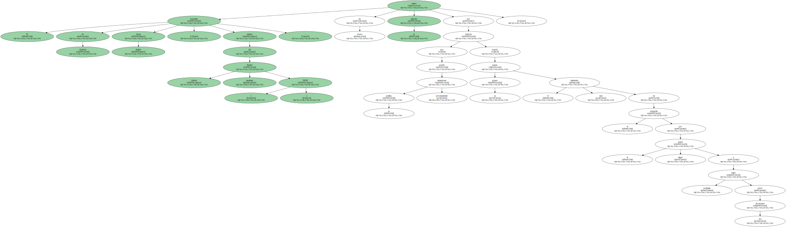Sobre el futuro político de Haider " todo está abierto " , declara él mismo , fiel a su estrategia de sembrar la duda y hacer jugadas tácticas , en el último número del semanario austriaco " News ".
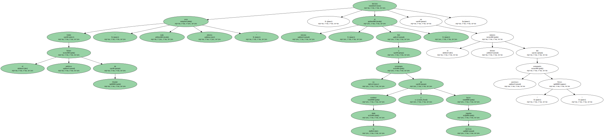El congreso extraordinario del FPOE del Estado federado austriaco de Carintia , del que Haider es jefe de Gobierno , el próximo día 15 , sería la ocasión para una eventual decisión de arrojar la toalla.
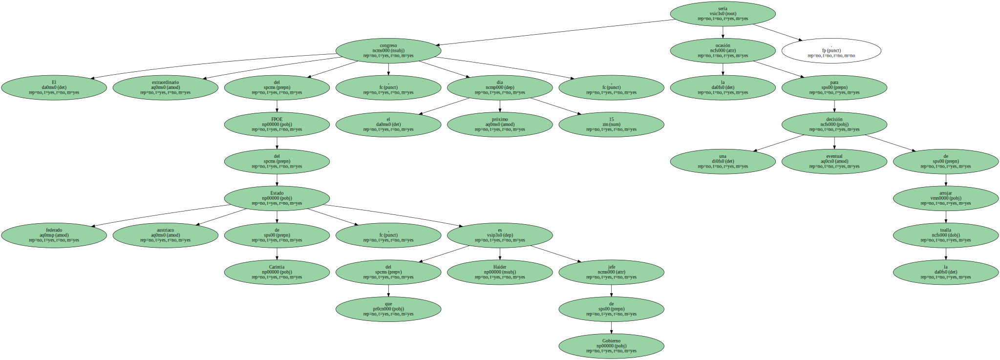Esa posibilidad , aunque remota , podría estar originada por las turbulencias que sufre el partido no sólo por el escándalo de los datos policiales , sino también por las tensiones internas que crea este conflicto.
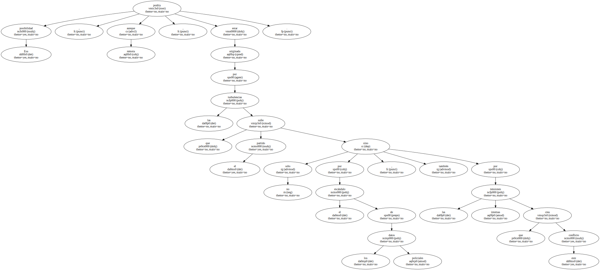Asimismo , también podrían contribuir a esa decisión las aseveraciones del jefe del Partido Socialdemócrata ( SPOE ) , Alfred Gusenbauer , de que los socios de los liberales en el Gobierno , los democristianos del OEVP , del canciller federal , Wolfgang Schuessel , han tanteado la posibilidad de volver a aliarse con ellos.
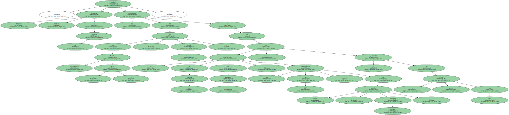Igualmente , desempeñaría un papel destacado la pérdida de apoyo popular del FPOE , que coinciden en apuntar todas las encuestas y que se debería al desgaste del poder de un partido que ha acostumbrado a su electorado a actuar desde la oposición en las últimas décadas y las medidas impopulares que , como integrante del Gobierno , se ha visto obligado a tomar , de lo que es ejemplo la subida de los impuestos.

Igualmente , desempeñaría un papel destacado la pérdida de apoyo popular del FPOE , que coinciden en apuntar todas las encuestas y que se debería al desgaste del poder de un partido que ha acostumbrado a su electorado a actuar desde la oposición en las últimas décadas y las medidas impopulares que , como integrante del Gobierno , se ha visto obligado a tomar , de lo que es ejemplo la subida de los impuestos.

Igualmente , desempeñaría un papel destacado la pérdida de apoyo popular del FPOE , que coinciden en apuntar todas las encuestas y que se debería al desgaste del poder de un partido que ha acostumbrado a su electorado a actuar desde la oposición en las últimas décadas y las medidas impopulares que , como integrante del Gobierno , se ha visto obligado a tomar , de lo que es ejemplo la subida de los impuestos.
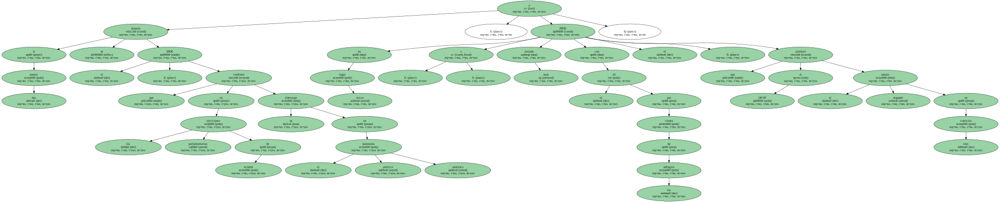Igualmente , desempeñaría un papel destacado la pérdida de apoyo popular del FPOE , que coinciden en apuntar todas las encuestas y que se debería al desgaste del poder de un partido que ha acostumbrado a su electorado a actuar desde la oposición en las últimas décadas y las medidas impopulares que , como integrante del Gobierno , se ha visto obligado a tomar , de lo que es ejemplo la subida de los impuestos.
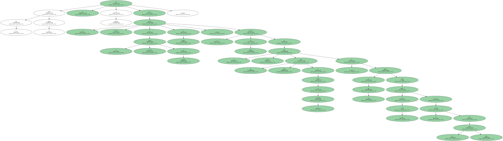El último sondeo hasta ahora , del Instituto Gallup y publicado hoy , revela que , en caso de nuevas elecciones , el partido más votado sería con el 30 por ciento de los sufragios el OEVP.
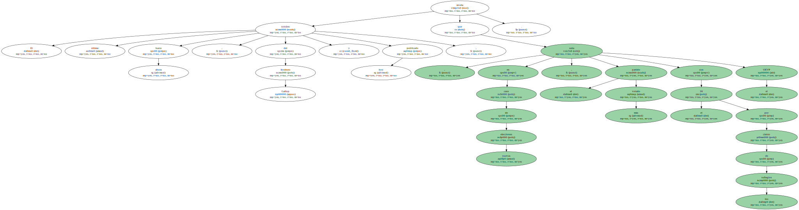A dos puntos se situaría el SPOE , que en las elecciones parlamentarias de octubre confirmó su liderazgo en el panorama político austriaco , y en tercer lugar y muy alejado , con el 20 por ciento de los sufragios , el FPOE , que arrebató al OEVP el segundo puesto en esos comicios.
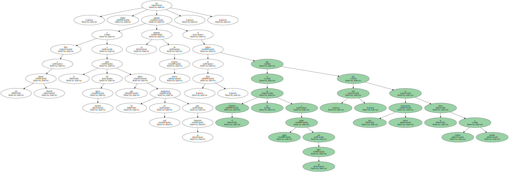Lo que señalan los sondeos se puso en evidencia con el fracaso electoral en el Estado federado de Carintia en octubre , el primero del partido en los catorce años que lleva Haider al frente de la formación , en los que ha logrado que pasase de un 5 a un 27 por ciento de votos.
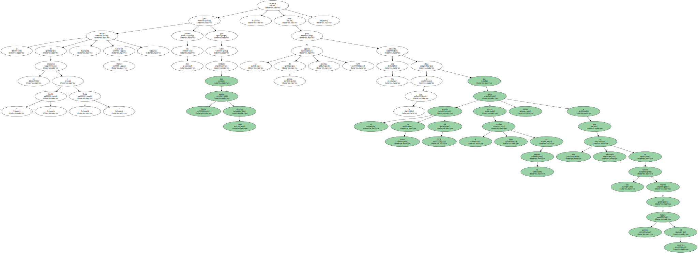En esos comicios , el FPOE perdió cinco puntos , mientras que su socio en la coalición en el Gobierno federal , el OEVP se alzó con la mayoría absoluta.
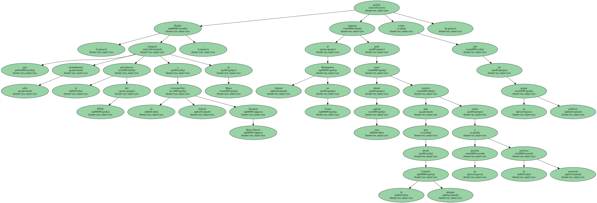Pese a esa derrota electoral y a la caída del apoyo electoral que reduce las perspectivas de voto para su formación , Haider ha reiterado su amenaza de nuevos comicios al indicar en " News " que " si el Gobierno no va a poder seguir con su labor , creo que una nueva convocatoria es lo único correcto y posible ".
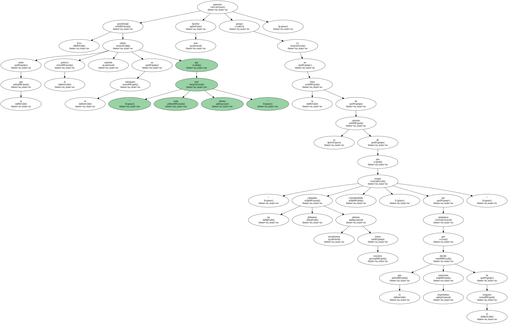El editor de los semanarios " Profil " y " Trend " , Christian Rainer , ganó hoy un proceso por haber señalado que Haider emplea términos nazis , mientras que la agencia de prensa austriaca APA puso hoy una denuncia en la que alega que el servicio de prensa del FPOE atenta contra el buen nombre de la empresa debido a que ésta ha informado de los rumores respecto al futuro político del populista.
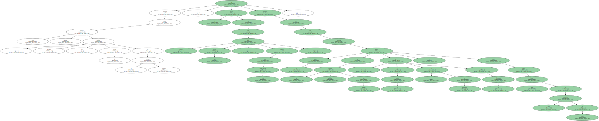Haider , que traspasó sólo formalmente la presidencia del FPOE a la vicecanciller federal Susanne Riess-Passer en Mayo , podría regresar al Parlamento federal en Viena como jefe de su grupo político para tener desde esta capital más control sobre su partido y la política nacional que desde la alejada Carintia.
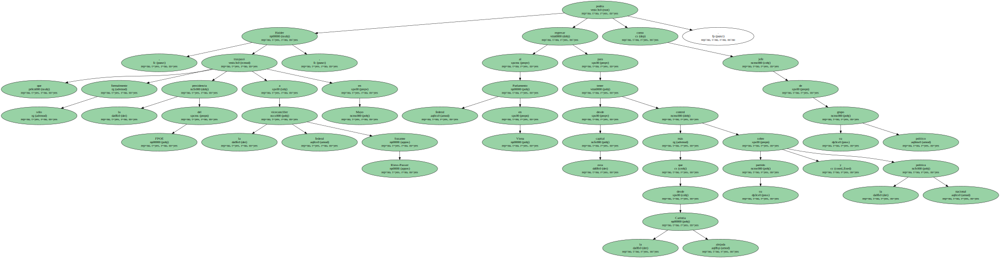Esta posibilidad sobre la que el político también señala en el semanario " que todo está abierto " parecería más factible porque va en la línea de su opinión de que " las diferentes campañas abiertas actualmente contra nosotros exigen contramedidas , por lo que tendremos que decidir cuestiones importantes en el congreso ".
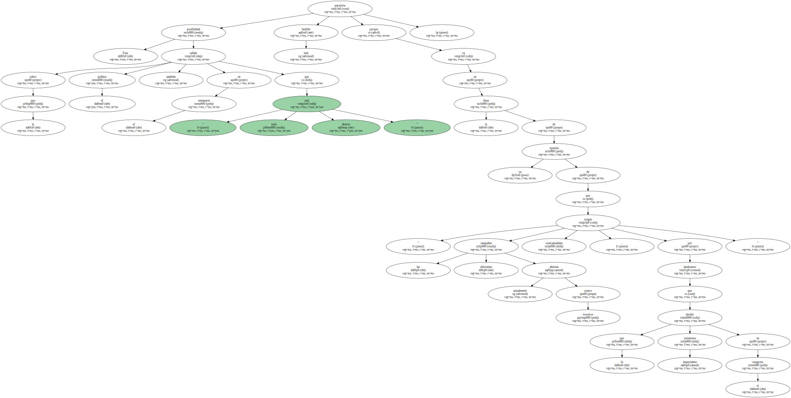Aunque como todo parece apuntar , Haider no arrojará la toalla en la escena política , el hecho de que deje abierta esa opción , aunque sea sólo públicamente , es indicativo de que necesita tomar el pulso a la opinión pública en general , y a su partido y a su electorado , en particular , para saber qué hacer en este momento de crisis.
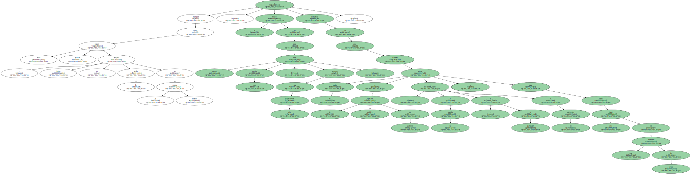